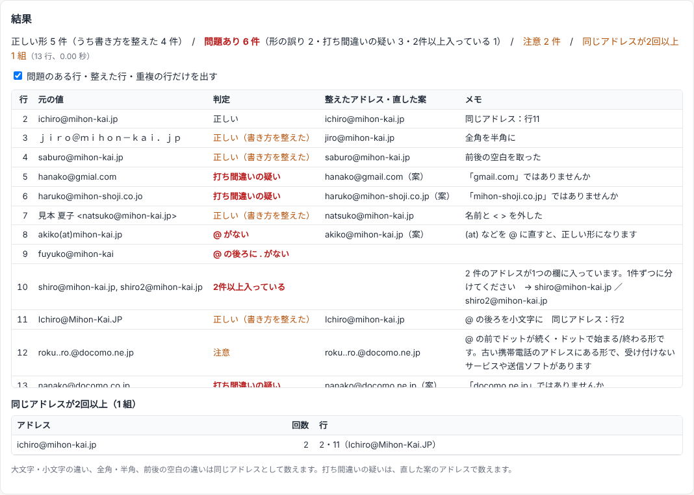

メールアドレス一覧の点検
会員名簿や顧客リスト、申込フォームの回答などにあるメールアドレスの列を1行ずつ調べて、全角の＠・空白などの書き方のゆれ、@ がない・2件入っているなどの形の誤り、＠の後ろのよくある打ち間違い、同じアドレスの重複を一覧にするツールです。案内を一斉に送る前や、メール配信のサービスに名簿を取り込む前に、届かない形のアドレスをまとめて見つけて直せます。ソフトのインストールは不要で、いつものブラウザで動きます。
お試し版はすべての機能を使えて、調べる・印刷・保存は先頭30行までです。決済が終わると、そのまま製品版の画面に移動します。ブックマークしておけば何度でも使えます。

見本のデータ（架空の名簿12件）を調べた例。アドレスは説明用のもので、実在の人・会社とは関係ありません。
こんなときに
- 紙の申込書や電話で聞いたアドレスを手で入力した名簿を、案内を送る前に点検したい
- メール配信のサービスや会員システムに名簿を取り込もうとしたら「形式が正しくない」と言われ、どの行かを探したい
- 全角の「＠」や「．」、前後の空白、「山田 太郎 <taro@…>」のような書き方がまざっていて、そろえたい
- 同じ人のアドレスが2回入っていて、案内が二重に届くのを防ぎたい
できること
- 書き方を整える：全角の英数字・＠・ドットを半角に、前後や途中の空白、「名前 <アドレス>」の名前、「mailto:」、前後のカッコや句点を外し、＠の後ろを小文字にそろえます
- 形の誤り：@ がない（「(at)」「アットマーク」なら @ に直した案を出します）、@ が2つ以上、@ の前や後ろがない、使えない文字（日本語・全角の記号など）、＠の後ろに「.」がない、ドットの連続、末尾が「.123」のような形、長すぎるもの
- 1つの欄に2件以上：「a@…, b@…」のように複数のアドレスが入っている欄を見つけ、分けたものをメモに出します
- ＠の後ろの打ち間違いの疑い：「.co.jo」「.ne.pj」「.con」「.cmo」のような末尾の打ち間違いと、よく使われるメールのドメイン（36種）に1〜2文字違いのものを「〜ではありませんか」と案を出します
- 注意：説明用のドメイン（example.com など、実際には届かないもの）と、@ の前でドットが続く・ドットで終わる古い携帯電話のアドレスの形（受け付けないサービスがあります）を分けて出します
- 重複：大文字・小文字、全角・半角、空白の違いをそろえて、同じアドレスの行を組にして出します
- 保存と印刷：アドレスの列だけを整えたものに置き換えた表（打ち間違いの案も反映する・重複の2行目以降を除く、を選べます）を Excel ファイルか CSV で保存できます。元の表に判定・直した案・メモの列を足した明細や、問題の一覧（A4 で印刷）も出せます
- CSV（UTF-8・Shift_JIS）と Excel ファイル（.xlsx）を読めます。アドレスの列は見出しと中身から自動で選びます。Excel の表をコピーして貼り付けても使えます
できないこと（購入前にご確認ください）
- アドレスが実際にあるか・届くかは確かめません（このツールはどこにも通信せず、メールも送りません）。分かるのは、アドレスの形が正しいかと、よくある打ち間違いの疑いまでです
- 「打ち間違いの疑い」は、よく使われるドメインとの近さから出す案です。会社や学校の独自のドメインの打ち間違いは、末尾（.co.jo など）以外は見つけられません。案を使う前に、本人の申込書などで確かめてください
- @ の前（ユーザー名）の打ち間違いは分かりません
- メールの一斉送信・配信の機能はありません。送る前の名簿の点検用です
- スマートフォンでは操作しにくいため、パソコンでお使いください
Excel だけで点検するなら
A 列にアドレスがあるとき、B2 に
=LOWER(SUBSTITUTE(ASC(A2)," ",""))
と入れると、全角の英数字・＠を半角に（ASC）、空白を取り（SUBSTITUTE）、小文字に（LOWER）そろえたアドレスになります。さらに C2 に =LEN(B2)-LEN(SUBSTITUTE(B2,"@","")) と入れると @ の数が出るので、1 でない行は形の誤りです。D2 に =COUNTIF(B$2:B$1000,B2) と入れて 2 以上なら、同じアドレスが2回以上あります。3つの式を下までコピーして、フィルターで絞り込んでください。
このツールが向いているのは、「名前 <アドレス>」や mailto: などの書き方もまざっている、「.co.jo」のような打ち間違いや、1つの欄に2件入っている行も見つけたい、整えたアドレスに置き換えた表をそのまま取り込みに使いたい、といった式だけでは手間のかかるときです。
よくある質問
| データはどこかに送られますか？ | 送られません。読み込み・点検・印刷・保存はすべてお使いのブラウザの中で行い、アドレスの存在を確かめる通信もしません。表題など一部の設定だけをブラウザに保存し、表の中身は保存しません。 |
|---|---|
| どの列がアドレスか、自分で選ぶのですか？ | 「メール」「アドレス」「mail」などの見出しと、列の中に @ が多いかどうかから自動で選びます。違っていたら画面で選び直せます。 |
| 電話番号など、ほかの列は変わりますか？ | 変わりません。置き換えるのはアドレスの列だけです。Excel ファイルで保存すると、すべてのセルを文字として入れるので、電話番号や郵便番号の先頭の0も消えません。 |
| 何行まで使えますか？ | 製品版は行数の制限はありません。画面の一覧は500行まで表示し、全部は保存したファイルに入ります。 |
安心してお使いいただくために
- 表はお使いのブラウザの中だけで処理し、サーバーには送信しません
- 動作環境：最新版の Chrome・Safari・Edge・Firefox（パソコン）
- 説明どおりに動かない場合は、ご購入から7日以内にご連絡いただければ返金します
氏名・電話・住所も合わせて名簿の重複をまとめるなら 名簿の重複チェック、表全体の全角・半角や空白をそろえるなら CSV 表記ゆれ整形 もあります。